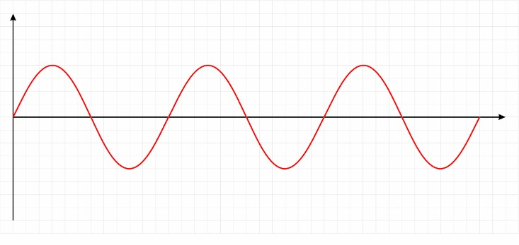
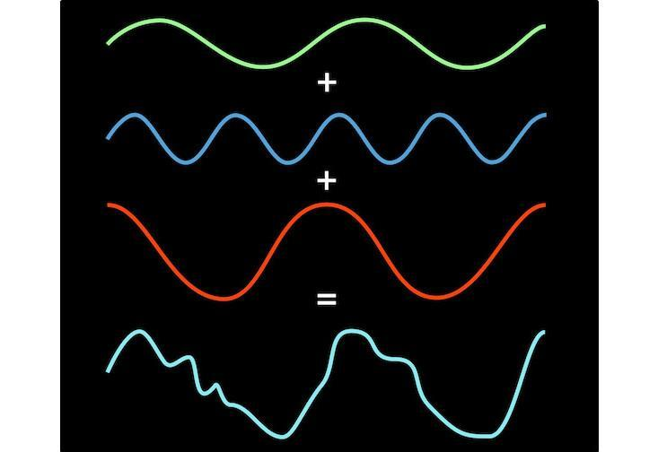
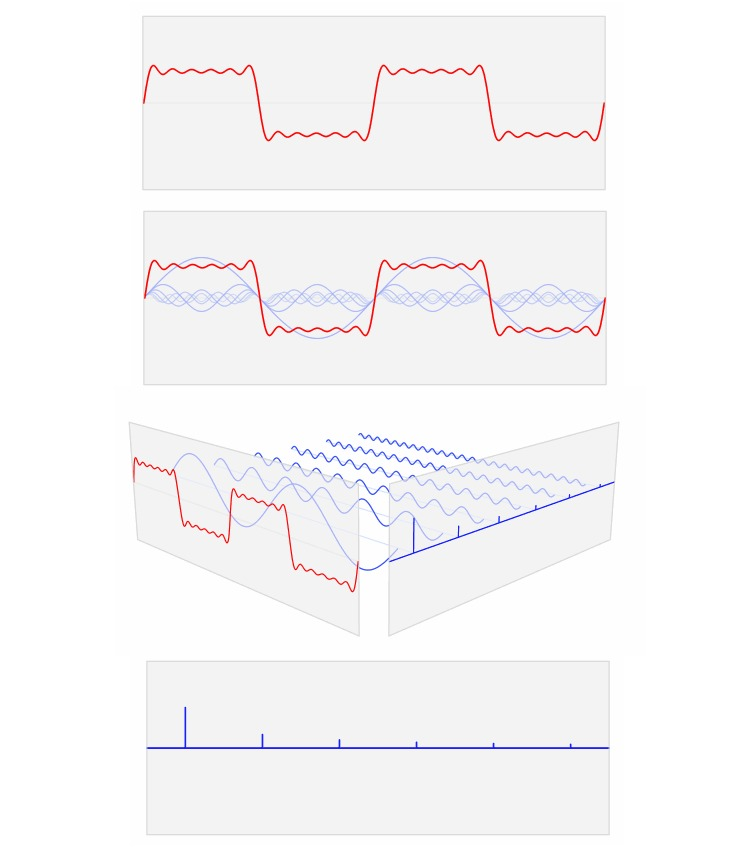
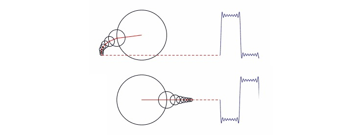

傅里叶变换
当你按下琴键的时候，钢琴中有一个小锤来来回回地敲击一根琴弦（对于音准do大约是 440次每秒）。这就是所谓的正弦波曲线，或正弦波。（特别说明：在钢琴的例子中， 肯能会产生不止一条正弦波实际演奏中，钢琴音色的丰富性正是来源于在主要正弦波之外 的那些轻柔的泛音。钢琴的音符可以大致模仿一条正弦波，但是对于单一的正弦波声音 来说，音叉发出的声音是一个更加贴切的例子。）

而考虑由三个按键同时发出的和弦声。和弦结果的声波并不漂亮——它看起来杂乱无章。 但是，在这混乱的背后有一个简单的模型。毕竟，和弦只是三个音符的相互融合与碰撞， 因此这样混乱的声波，实际上只是三种音符（正弦曲线）的和而已。

傅里叶认为这不仅仅音乐和弦的特殊属性，而可以推广应用到一切重复的波形中，无论这个 波形是方形，圆形，波浪，三角形或是其他。傅里叶变换像是一种数学棱镜——你输入一个 波形并且将这种波形分解为不同成分——这些音符（正弦曲线）会相互叠加而形成新的重建 波形。
如果这听起来有一些抽象的话，有一些可视化的方式来使得傅里叶的方法更加直观。第一种 方法是有卢卡斯（Lucas V. Barbosa）提出的。他是一名来自巴西的物理学学生，他将 业余时间无偿用于为维基百科制作关于数学和科学的动画，在维基百科上他被称为 “LucasVB”。
那么，现在让我们来看看输入一个方形波，经过傅里叶变换后，会输出怎样的波形。


在这些图形中（点击这里可查看 GIF 动态图），红色的方形波被分离为单纯波形的集合 （蓝色的正弦曲线）。将这些蓝色波形认为是红色波形的数学成分列表。在这个比喻中， 傅里叶变换就像是一种药方——他准确地告诉你要重建原始波形，每一种简单波形你要使用 多少。动画中的垂直蓝色线，是每种波形数量的直观表示。
思考这个问题，还有一种由马修·亨德森（ Matthew Henderson or Matthen）提供的方法。 他是剑桥大学的博士生，并且对于创建数学动画模型非常有兴趣。他用圆形而不是正弦曲线 来解释傅里叶变换。这种方法包含了一组不同大小的圆，每个圆的圆心都在一个更大的圆的 边缘上。然后，这些圆开始转动，大圆在小圆的周围摆动，小圆的运动速度大于大圆。如果 你追踪最小圆上一个点的运动轨迹，如下面的动画和截图所示，你可以重建任意形状的波形 。傅里叶变换再一次告诉你波形是怎样产生的：以怎样的速度去移动哪些圆。

如果你年纪够大以至于你用过呼吸量描记仪，那么通过层叠的齿轮来描述复杂模型的想法 你可能很熟悉。LucasVB在同一个动画上制作了互动的版本，使得你可以随意改变圆圈的 大小。
总的来说，傅里叶变换告诉你，在一个整体的波形中，每一个单独的“音符”（正弦曲线 或是圆圈）的比例。这就是傅里叶变换如此有用的原因。想象一下，你正在和你的朋友通 电话，同时你想让他们能够画出近似方形的波形。复杂的方式是读出一长串的数字，每个 数字表示了相应时间点上波形的高度。有了这些数字，你的朋友可以耐心地绘制出原始 波形。这就是原始的音频格式比如WAV的基本原理。但是，如果你的朋友知道傅里叶变换， 那么你可以更加聪明地完成这个工作：你只要告诉他们少量数字——上图中提到的不同的圆 的尺寸。他们可以用这些圆来重建原始波形。
这也是智能手机的应用程序Shazam怎样识别一首歌的原理。它将音乐分割成块，利用 傅里叶变换算出每一块中的音符成分。然后它搜索数据库，来寻找这样的“音符指纹”与 他们已有文件中的一首歌相匹配。语音识别同样使用“傅里叶——指纹”的思想，将你的声音 与已知单词列表进行比较。